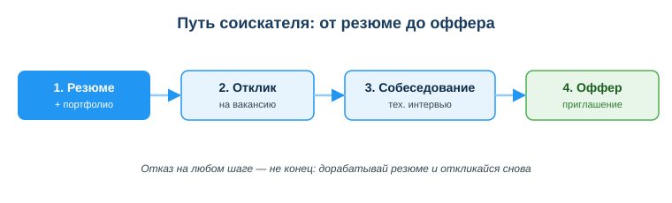
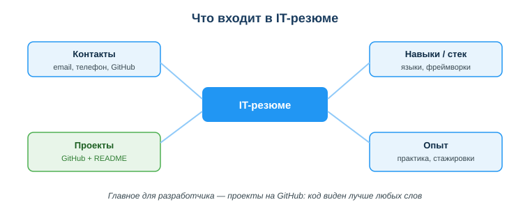

Ты заканчиваешь учиться программировать и хочешь свою первую работу или стажировку. Открываешь интернет — и теряешься: сотни вакансий, незнакомые слова «junior», «стек», «middle», требования на полстраницы. С чего начать и куда вообще отправлять резюме?
Оказывается, поиск работы в ИТ — это тоже понятный процесс с цифровыми инструментами. Есть порталы вакансий (Enbek.kz, hh.kz), мировые профессиональные сети (LinkedIn), каналы сообществ. А есть твоё цифровое резюме и портфолио на GitHub, которые работают на тебя круглосуточно. Научишься этим пользоваться — найдёшь работу быстрее.

Уметь программировать — это половина дела. Вторая половина — суметь устроиться на работу. Даже сильный разработчик без понятного резюме и портфолио рискует остаться незамеченным, а слабые отклики «вслепую» тратят время впустую. Цифровые инструменты поиска работы экономят недели.
Связь с профессией: уже на учебной практике и стажировке тебе понадобится искать вакансии, читать требования и показывать свой код. Профиль на hh.kz, аккаунт LinkedIn и проекты на GitHub — это рабочие инструменты разработчика, а не формальность. Тот, кто умеет ими пользоваться, получает приглашения на собеседования чаще.
Посмотри на схему «Путь соискателя» выше. Ответь на вопросы:
Проще: портал — это «биржа», где встречаются те, кто ищет сотрудников, и те, кто ищет работу. В Казахстане главные площадки — государственная Enbek.kz и коммерческая hh.kz; для выхода на международный рынок и нетворкинга есть LinkedIn (но доступ к нему из Казахстана ограничен — нужен VPN).
| Портал | Особенность |
|---|---|
| Enbek.kz | государственная электронная биржа труда РК |
| hh.kz | крупнейший портал вакансий в РК |
| мировая профессиональная сеть, нетворкинг (доступ из РК ограничен — нужен VPN) | |
| GitHub / Telegram-каналы | вакансии напрямую от компаний и сообществ |
Начни с Enbek.kz и hh.kz — там много вакансий по РК, включая junior-позиции. LinkedIn пригодится для общения с коллегами и поиска в международных компаниях, но учти: в Казахстане он заблокирован, заходить можно только через VPN — поэтому для первой работы в РК опирайся на Enbek.kz и hh.kz. А в Telegram-каналах ИТ-сообществ и на GitHub часто появляются вакансии напрямую, без посредников.
В описании вакансии ищи четыре блока:
Сопоставь вакансию со своими навыками: что у тебя уже есть, а что нужно подтянуть. Для первой работы выбирай позиции уровня junior — там не ждут большого опыта.

Главное отличие IT-резюме от обычного — упор на проекты и стек, а не на красивые общие фразы. Работодатель хочет увидеть твой код.
Студент откликнулся на 50 вакансий одним и тем же резюме без проектов — ни одного ответа. Следующий шаг: добавить 2–3 проекта на GitHub с README и адаптировать резюме под конкретные вакансии (выделить нужный стек, убрать лишнее). После этого пошли первые приглашения на собеседования.
Ответь письменно:
Источник: ГОСО ТиПО (приказ МП РК); официальные порталы Enbek.kz, hh.kz, LinkedIn; DigComp 2.2 (цифровые компетенции для трудоустройства).
Разработал: преподаватель ИКТ, магистр управления и информационной безопасности Калиаскаров Д.А.
Материал одобрен к использованию в обучении решением Педагогического совета ТОО «Колледж Хекслет Казахстан».